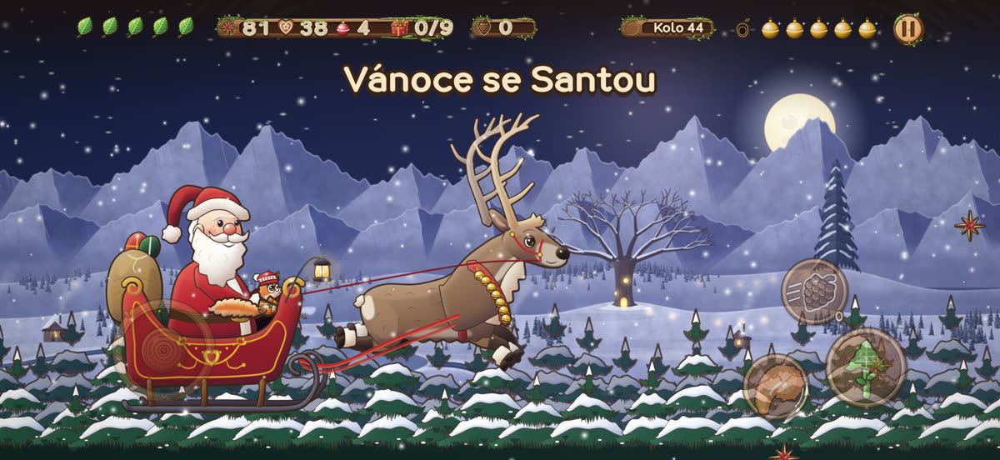
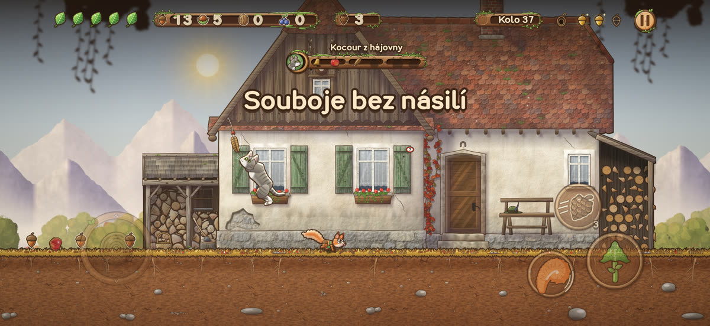

Druhý rok: 20 nových kol
Mlýnská kola, jízda na srně Rose a příběh o ztraceném kolouškovi.
44 kol napříč jarem, létem, podzimem i zimou. Každé má vlastní malovanou pohlednici a pohádku.
Mlýnská kola, jízda na srně Rose a příběh o ztraceném kolouškovi.

Ozdob velký smrk, rozsviť hvězdu a leť se Santou nad zasněženým lesem.

Bossové se neporážejí, ale dostanou pomoc. Každý nepřítel prostě uteče.
Rézi vznikla jako hra, kterou si rodiče a děti užijí spolu. Bez starostí.